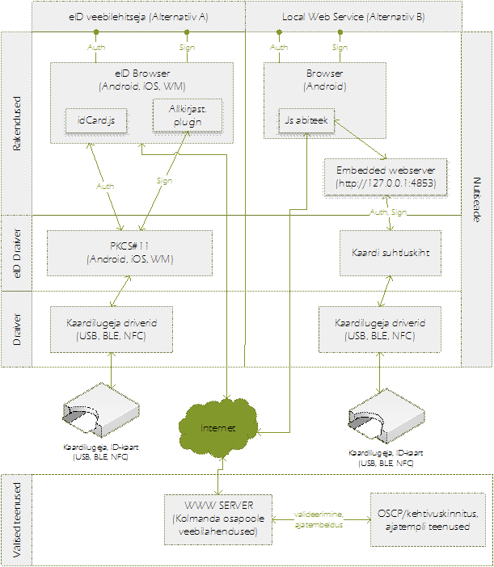

Tulenevalt veebilehitsejate Chrome-i, Safari ning IEMobile-i pea täielikust dominantsusest vastavate platvormide peal, ei käsitle käesolev analüüs kolmandate osapoolte veebilehitsejate toetamist.
Kuigi iOS ning Android platvormide sertifikaatide hoidlasse on võimalik installeerida täiendavaid sertifikaate failide näol (s.h. ka kliendi tuvastamiseks veebilehitsejas), siis puudub kõigil platvormidel võimalus riistvarapõhiste liideste jaoks23. Sellest tulenevalt ei ole võimalik kasutada süsteemset sertifikaatide hoidlat autentimiseks nagu seda tehakse töökoha-arvutitel. Sertifikaadihoidlat on võimalik kasutada ainult siis, kui kasutaja impordib võtmed ja sertifikaadid korraga (teadaolevalt ei ole võimalik kasutada programmeeritavalt nii, et võtmed asuvad mujal). Kahjuks ei võimalda ka ükski ülal mainitud veebilehitseja ühelgi moel kolmandate osapoolte poolt lisade (extensions, plugin) loomist, seega peale m-ID ei ole mobiilsetel platvormidel eksisteerivatele veebilehitsejatele (Chrome, Safari, IEMobile) võimalust eID toe lisamiseks.
Kontseptuaalselt on alternatiivina võimalik Android seadmete puhul rääkida Local Web Service (LWS) kasutamisest ja sellele vastava arhitektuuriga eID tarkvaralisest lahendusest (vt joonis 3, alternatiiv B). iOS/WM platvormil LWS teenuse kasutamine läheb vastuollu platvormi sandbox turvamehhanismist tulenevate taustal rakenduste käitlemise reeglitega:
FutureID raames on analüüsitud LWS turvariske (man-in-the-middle attack, DNS spoofing, exchange of LWS) ning leitud, et nende tõenosus ja/või mõju on madal. Samas leiame, et lahendussuuna valikul on vajadus täiendava ja põhjaliku turvaanalüüsi järele.
Lisaks muutuks olemasolev eID autentimise loogika täielikult, kuna autentimine ei toimu LWS puhul enam HTTPS ühenduse sertifikaatide alusel, vaid JavaScript API kaudu. See tähendab, et analoogselt m-ID-le tuleb lisada täiendav autentimise mehhanism. Samuti ei ole LWS puhul võimalik iOS/WM platvormidel kutsuda nutiseadmes esile UI elemente (nt PIN küsimiseks vms).
Ainukeseks (kõigil platvormidel toimivaks arhitektuurseks) lahenduseks võib lugeda oma eID veebilehitseja tarkvara arendamist ja tarnimist (vt joonis 3, alternatiiv A).
Kuigi Androidis on tehniliselt võimalik kompileerida ning kasutada oma veebi joonistamise mootorit (Gecko, Webkit), siis iOSis ning WMs selline võimalus täielikult puudub ning on arenduslepingu järgi keelatud. Täiendavalt on sellise lahenduse regulaarne uuendamine ning toetamine veebilehitsejate kiirest arengust johtuvalt äärmiselt ebapraktiline.
Töökoha-arvutitel kasutusel olev SSL-autentimine on nutiseadmetes teadaolevalt võimalik ainult eID veebilehitseja laadse lahendussuuna valikul. Antud tüüpi lahendussuuna on kasutusele võtnud ka teised seadmetootjad (nt Feitian Mobile Secure Browser, Biometric Associates baiBrowser jt). Kõigil kolmel platvormil on võimalik realiseerida “eID veebilehitseja” kasutades süsteemi poolt pakutavat WebView komponenti24, millel on võimalik lisada SSL kasutajatuvastus sertifikaatide pakkumine kasutades identifitseerimise meetodile vastavaid draivereid. Allkirjastamiseks on võimalik kasutada WebView liideseid töökohaarvutite veebilehitsejates kasutatava JavaScript klienditeegi toe lisamiseks. Antud teek on mõeldud selleks, et veebilehele allkirjastamise toe lisamine oleks lihtne ning erinevate digitaalallkirjastamiseks mõeldud veebilehitsejate iseärasused oleksid veebiarendaja jaoks ühtse API taha ära „peidetud“.
Antud lähenemise nõrkuseks on standardsete veebilehitsejate osade (nt navigeerimise kasutajaliides, ajalugu, lemmikud jne) puudumine. Vastav kasutajaliides (ning sinna juurde käivad pilve teenuste integratsioonid, nt otsing) tuleks realiseerida algusest või mõne open source webview-l põhineva veebilehitseja alusel. Plussiks aga seevastu on veebimootori pidev uuenemine operatsioonisüsteemi tasemel, s.h. kõik viimased jõudluse ning turvalisuse parandused.
Android platvormil on alternatiiviks süsteemse veebilehitseja (Chrome) forkimisega täiendavate funktsionaalsuste juurde arendamine. Antud alternatiiv on realistlik, kui eksisteerib perspektiiv, et täiendavad funktsionaalsused mingis ajaraamis tootja integreerib tagasi enda veebilehitsejasse (vastaselt juhtumil oma veebilehitseja pikaajaline arendamine/toetamine toob kaasa endaga arvestatavad kulutused). iOS ning Windows Mobile veebilehitsejad (Safari, IEMobile) on suletud lähtekoodiga, seega pole forkimine võimalik. Täiendavalt on mõlemal platvormil keelatud 3ndate osapoolte veebi joonistamise mootorite kasutamine.

Joonis 3 . Veebis autentimise ja allkirjastamise alternatiivlahendused
W3C on publitseerinud Web Crypo API, mille eesmärk on ühtlustada krüptograafia-funktsioonide kasutamine veebilehitsejas. Hetkel on tugi olemas väiksel osal veebilehitsejatest ning nutiseadmetes puudub täielikult (analoog Web NFC API-ga, kus eeldused standardi näol on olemas, kuid praktikas paljus tarkvara tootjad standardit ei toeta). Piiranguks on võimaluse puudumine veebilehitsejas autentimiseks/allkirjastamiseks ise genereeritud sertifikaatide kasutamiseks. Puudub tugi riistvaraliste tokenite kasutamiseks.
Eestis levitatud SSL-sertifikaatide (KLASS-3) kasutamisel autentimiseks, peavad olema levitatud seadmetesse juur-sertifikaadid. Analüüsis ei ole ette näha juur-sertifikaatide levitamiseks lisatoiminguid standardsete veebilehitsejatega (Chrome, Safari ja IEMobile). Lahendatud olemasolevate toimivate mehhanismidega.
[23] KeyChain class, Android Developer Reference [URL], iOS: Pre install SSL certificate in keychain – programmatically. StackOverflow [URL].
[24] WebView komponent on kõigil platvormidel standardne komponent, mille eesmärk on võimaldada töödelda ja esitleda veebitehnoloogial põhinevat sisu (kas siis dünaamilist või staatilist). Android platvormil kannab see nimetus WebView class, iOS-s UIWebView class ja WM-s WebBrowser control (täiendav info platvormi komponentide kohta: Android, iOS ja WM).